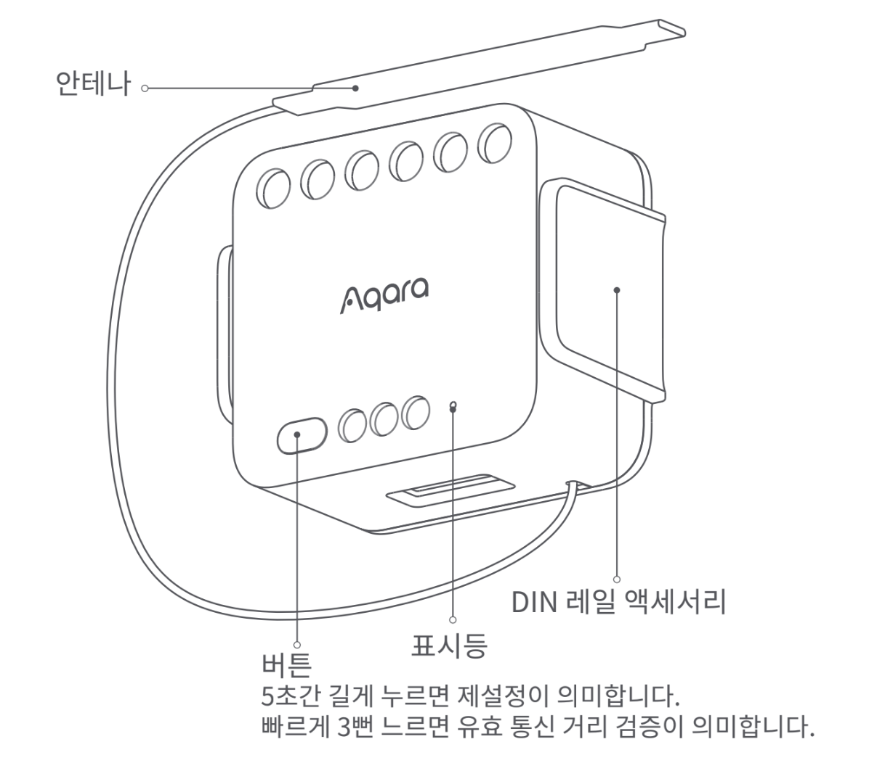
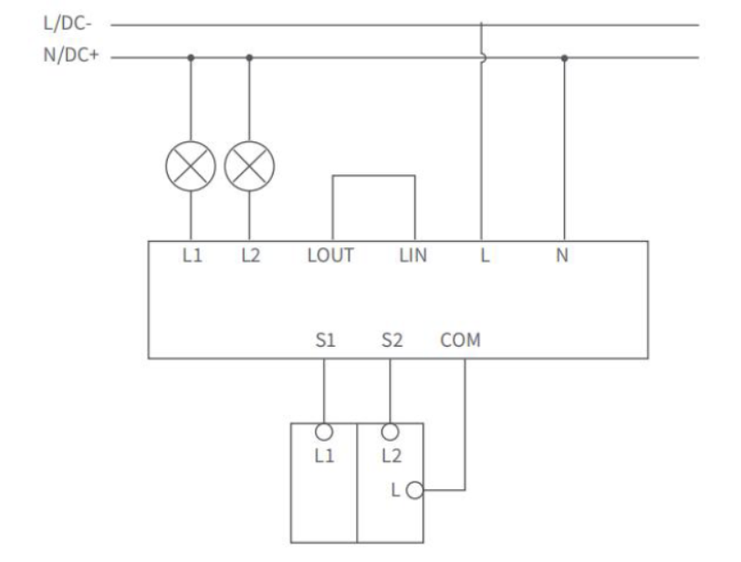
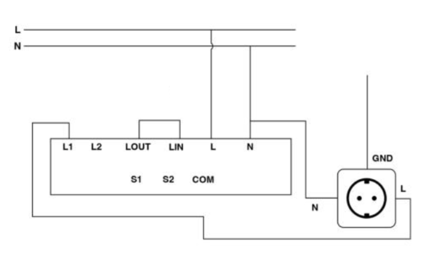
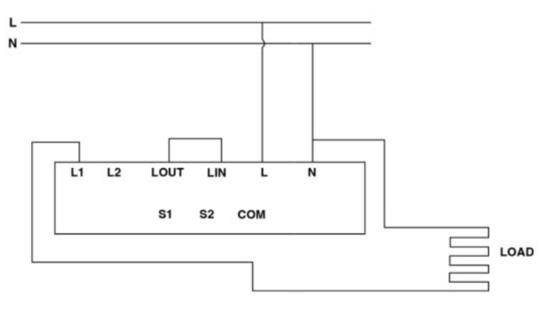
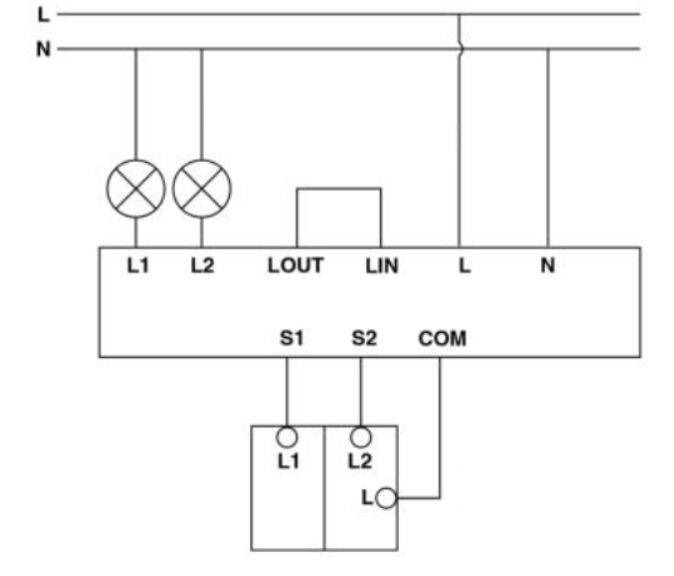
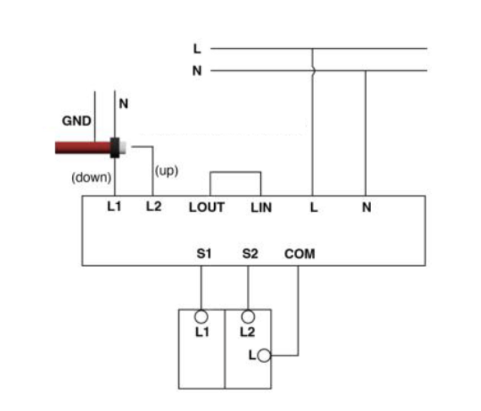
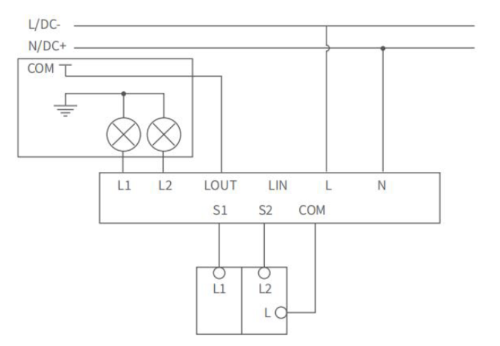
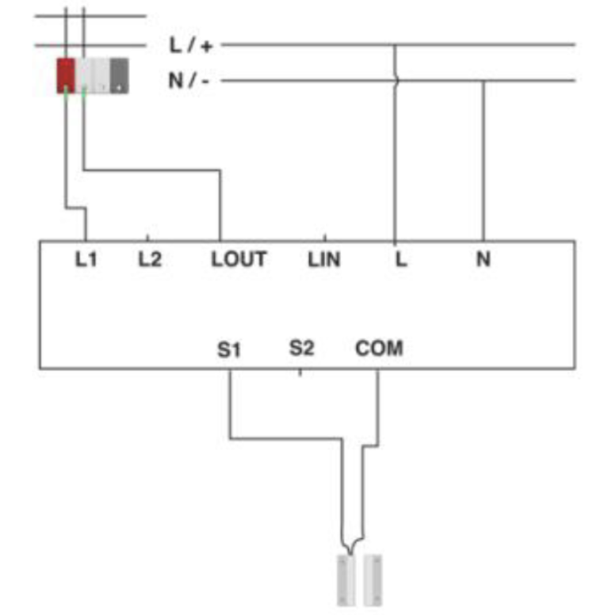
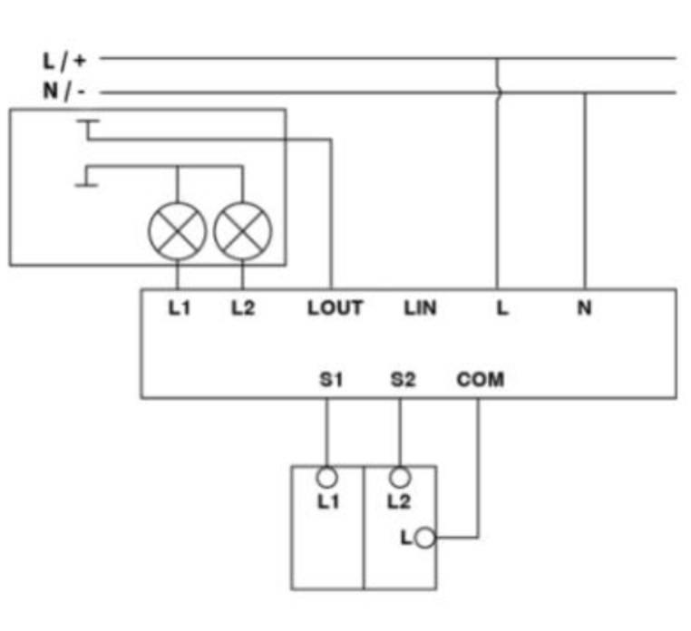

16 듀얼릴레이 모듈 T2 (중성선필요)
16.1 제품 소개
Aqara 듀얼 릴레이 모듈 T2은 Zigbee 무선 통신 프로토콜을 기반으로 연결된 장치 전원의 켜기 및 끄기를 제어하는 장치입니다. 본 제품은 연결선을 이용하여 AC 전원 자체를 스위칭 하거나 일반 전기신호(DC 전원, 전기 신호등)를 스위칭하여 로드를 구동하도록 구성할 수 있습니다. 연결된 220출력 또는 무전압 방식으로 제어 방식을 전환할 수 있어 모터 및 차고 문과 같은 무전압 방식의 장치를 제어 할 수 있습니다. 또한 Aqara 허브로 Aqara Home앱을 통한 장치 제어, 타이머 설정, 전력량 통계 등의 기능을 구현할 수 있습니다. 또한 홈킷 지원으로 애플 Home App을 통해 장치를 신속하게 제어 할 수 있습니다.
- 해당 장치를 사용하기 위해서는 반드시 호환 가능한 허브가 필요합니다. 일부 기능은 특정 모델 허브의 지원이 필요합니다. 세부사항에 대해서는 www.aqara.com/support 사이트를 참조해 주십시오.

- 키가 손상 될 수 있으므로 도구로 키를 세게 누르지 마세요.
16.2 빠른 설정
16.2.1 Aqara Home 앱 다운로드
앱 스토어에서 “Aqara Home”을 검색하거나 아래 로고를 클릭해 주세요.


16.2.2 장치 바인딩 및 초기화
(1) 액세서리를 활성화하기 전에 위 스토어에서 다운로드하여 설치된 Aqara Home 앱에 Aqara허브가설치되어 있는 지 확인하십시오.
(2) 앱을 열고 “홈”을 누른 후 오른쪽 상단 모서리에 있는 “+”를 눌러 장치 추가(액세서리)” 페이지로 들어 가십시오. “듀얼 릴레이 모듈 T2 사용자 매뉴얼”을 선택하고 지침에 따라 추가 하십시오.
유효 거리 확인: 스위치의 아무 버튼이나 세번 빠르게 누르면 허브가 삐 소리를 내며 장치와 허브가 서로 효과적으로 통신할 수 있음을 나타냅니다.
- 이 기능은 Aqara 홈 앱에서만 지원됩니다.
16.3 설치
16.3.1 유전압 접점 모드
(접속 장치는 중성선 및 활선으로 전원을 공급 받고 릴레이를 통해 연결된 장치를 제어합니다.)
(1) 드라이버를 사용하여 장치 접선 단자의 나사를 풀고 그림에 따라 중성선을 N홀에, 활선을 L홀에 연결합니다. 연결선을 사용하여 LIN 홀과 LOUT 홀을 연결 시키고 부하(램프) 선을 L1,L2 홀에 연결합니다.
(2) 사용자가 원래 스위치의 로컬 제어를 유지하기를 원할 경우 배선 방법은 아래 그림과 같습니다. 외부 스위치의 공용 단자는 COM 홀, 스위치 제어선은 S1, S2에 접속하여 회선이 정확한지 확인한 후 단자 나사를 조입니다.
(3) 전원 스위치를 켜고 장치 바인딩 및 초기화 설저에 따라 장치를 추가합니다.
16.3.2 장치 설치
16.3.2.1 습식 접촉 모드
주의: 이 모드에서는 제공된 빨간색 점퍼 와이어를 사용하여 단자 LIN 및 LOUT을 단락 시켜야 합니다(점퍼 와이어를 연결해야 함).
배선 지침
안전을 위해 전기 회로 차단기를 끄십시오. 제품에서 단자점 LIN, LOUT, L1, L2, S1,S2 및 COM을 찾습니다.
라이트의 부하선을 L1 및 L2 단자에 연결합니다. 기존 스위치의 전선을 S1,S2 및 COM 단자에 연결합니다. 드라이버를 사용하여 모든 연결을 조입니다.
전기 회로 차단기를 다시 켭니다. 앱에서 해당 스위치 유형과 습식 접촉 모드를 선택하고 제품을 테스트하여 예상대로 작동하는지 확인합니다.

사용 사례
(1)
A. 스마트 콘센트의 경우 부하는 릴레이에 직접 연결됩니다.릴레이는 간단한 온/오프 스위치 역할을 합니다.

B. 전기 바닥 난방: 위 A와 유사하지만 이제 릴레이가 온도 조절기 역할을 합니다. 온도 센서로 자동화를 구성하는 것이 좋습니다.

(2)
A: 스마트 조명 스위치: 이 경우 조명, 팬 등을 제어하는 기존 벽면 스위치 뒤에 릴레이를 설치할 수 있습니다.
2 방향(3 방향) 스위칭: 두 개 이상의 스위치를 다방향 구성으로 연결할 수 도 있으며, 모든 스위치가 릴레이 T2에 연결된 조명을 제어할 수 있습니다.

B: 스마트 롤러 쉐이드 스위치: 릴레이는 기존 롤러 쉐이드 스위치 뒤에 설치하여 기존 비스마트 롤러 쉐이드 모터를 제어할 수 있습니다.
- 참고: T2를 롤러 쉐이드 스위치로 사용하려면 인터록 모드를 엄격하게 활성화해야 합니다.
(3) DIN 레일 에너지 모니터: 포함 된 DIN 레일 마운트를 사용하여 릴레이를 메인 정션 박스 내부에 설치하고 에너지 소비량을 측정하고 누수와 같은 긴급 상황 발생시 회로를 차단 할 수도 있습니다.

- 참고: 릴레이 T2는 회로 차단기가 아니며 최대 전류가 10A이므로 가정용 회로의 대부분을 제어 할 수 없습니다.
16.3.2.2 건식 접촉 모드
주의 : 단자 LIN 및 LOUT이 단락되어서는 안됩니다 (점퍼 와이어를 제거해야 함).
배선 지침
안전을 위해 전기 회로 차단기를 끄십시오. 제품 및 제어 장비에서 단자 L1,L2, LOUT 및 COM을 찾습니다.
제어 장비의 부하 와이어를 릴레이의 L1 및 선택적으로 L2단자에 연결합니다. 제어 장치의 COM 단자를 릴레이의 LOUT 단자에 연결합니다. 드라이버를 사용하여 모든 연결부를 조입니다.
전기 회로 차단기를 다시 켭니다. 앱에서 해당 스위치 유형과 건식 접촉 모드를 선택하고 제어 장비와 제품이 예상대로 작동하는지 테스트합니다.

참고: 기계식 스위치는 85V 이상의 AC 전압에서만 작동하며, DC 전압에서는 작동하지 않습니다.
사용 사례
(1) 차고 도어 컨트롤러: 이 경우 릴레이는 벽면 버튼 접점(COM+OP/CS/O/S/C)을 사용하여 기존 차고 도어 모터를 제어합니다. 차고 도어 오프너와의 호환성을 보장하려면 벽면 버튼 접점을 찾아 펜치 또는 종이 클립으로 단락 하십시오. 문이 열리고 닫히기 시작해야 합니다.

참고: 차고 문을 제어할 때는 사람이 끼일 위험이 없는지 확인하십시오.
(2) 암 배리어 등 건식 접점으로 제어할 수 있는 다른 장치는 차고 도어 컨트롤러와 유사하게 배선할 수 있습니다.
(3) 보일러: 이 경우 릴레이는 보일러의 온도 조절기로 사용됩니다. 예를 들어 집에 아무로 없을 경우 보일러를 끌 수 있습니다.
(4) 기존 기기를 스마트하게 만들기: 건식 접점은 커피 머신, 방향제 등과 같은 기존 기기의 버튼을 “누를” 수 있습니다.

16.3.2.3 무선 스위치 모드
릴레이를 배터리 교체가 필요 없는 무선 스위치로 사용할 수 있습니다.
(1) 기존 유선1 채널 또는 2 채널 벽면 스위치를 연결하여 무선 스위치로 사용하세요.
(2) 또는 바이너리 센서를 하나 또는 두 개 연결하여 릴레이를 자동화 장치에 사용할 수 있습니다.
- 참고: S1/S2/COM 접점에 연결된 센서 또는 스위치는 릴레이에 공급되는 전압을 지원해야 합니다.
16.4 경고
제품 설치 시 강전기와 관련되어 있어 전문적인 기술 인력이 관련 전기 규범과 제품 설명서에 따라 설치해야 합니다.
이 제품은 실내에서만 사용하시고 습한 환경이나 야외에서 사용하지 마십시오.
이 제품은 해발 2,000m 이하의 지역에서만 안전하게 사용할 수 있습니다.
습기에 주의하십시오. 제품에 물이나 다른 액체를 흘리지 마십시오.
이 제품을 열원 근처에 두지 마십시오.
자체 수리를 하지 마십시오. 모든 수리는 공인 작업자로 수행해야 합니다.
과부하로 사용하지 마시고, 전원이 켜지지 전에 본 제품 선단의 10A 과전류 보호 차단기가 정상 작동하도록 하십시오. 단자 접속선의 구리선 길이는 6~8mm로 권장합니다.
이 제품은 벽 외부와 같은 손에 닿을 수 있는 곳에 설치하거나 고정하지 않으며 기구 또는 소켓 박스에 설치해야 합니다. 고정 안테나의 위치는 금속, 전선 및 모듈 자체를 최대한 피해야 합니다.
16.5 표시등 설명
| 표시등 상태 | 장치 상태 |
|---|---|
| 파란색 불 한번 깜빡임 | 장치 전원 켜짐 |
| 파란색 불 빠르게 깜빡임 | Zigbee 네트워크 연결 중 |
| 파란색 불 늘 켜져 있음 | Zigbee 네트워크 연결이 정상이고 스위치 켜짐 |
| 빨간색 불 빠르게 깜빡임 | 과열 경보 |
| 빨간색 불 천천히 깜빡임 | Zigbee 네트워크가 연결되지 않음 |
16.6 제품 사양
모델: DCM-K01
무선 프로토콜: Zigbee 3.0
제품 크기: 45.5 x 48 x24 mm (1.79 x 1.89 x 0.94 in)
정격 매개 변수: 100 ~ 250V, 50/60 Hz / Max. 10A, Max. 2500W | Max. 1A, Max 250W(LED,CFL) | Max. 1A, Max. 1/4 HP M.1
24 ~ 30 V: Max. 10A, Max. 300W (저항 부하)
30 ~ 60 V: Max. 1A, Max. 60W (저항 부하)
작동 온도: -10’ C ~ 40 ‘C (14’ F ~ 104’F)
작동 습도: 0 ~ 95% RH / 비결로 조건
Zigbee 운영 빈도수: 2405 ~ 2475 MHz
Zigbee 최대 출력 전력: 13 dBM 이하